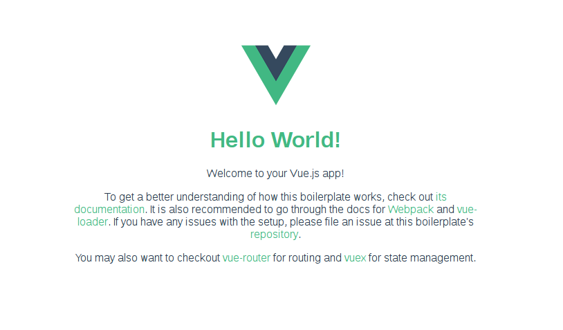

Introduction
I’ve been exploring different Javascript frameworks recently, stumbling around Angular and React with their massive communities and die-hard fans. React is cool, but I was looking for something a tad simpler and more straight to the point. Somehow I discovered Vue and instantly fell in love. The syntax is easy to pick up quickly, and allows you to just begin coding immediately.
As I came from a Meteor background, I needed to get not only Vue set up, but also a Node server with an API + a database. I did some Googling and found no tutorials giving this “full stack” approach to something as simple as a to do list.
In this tutorial we will be building a full stack to do list application with the following stack :
- Vue (View layer)
- Socket.io (Reactive Updates)
- Express (Server/API)
- RethinkDB (Database)
I’ve found this stack to be incredibly easy to work with, and I think it is a clear winner over the classic MEAN stack approach.
So let’s get started.
Installation
Github Repository For The Tutorial : https://github.com/patrickbolle/vue-todo
NOTE: This tutorial assumes you know the basics of running a Javascript application. This includes using the terminal, installing packages with NPM, etc.
We will be building a full stack todo list application. We will be using all of the CRUD (Create, Read, Update, Delete) functions and interacting with our RethinkDB database using an Express API, with a little bit of Socket.io to allow for reactive data.
First things first, please read the VueJS Documentation to get a better understanding of the concepts. They have done a great job with the documentation and my explanations will not be enough for you to understand Vue.
To begin, we will be installing Vue and it’s accompanying tool, Vue-CLI for scaffolding.
|
|
CD into whatever directory you would like to base your project out of. For me this is in a “Projects” folder.
|
|
Now run the following command to initialize a new Vue project with a Webpack template :
|
|
You will be asked some basic questions regarding the project, like project name, description, linting, testing, etc.
I personally disable linting as I have Atom do that for me anyways automatically. As for testing, I will not be going over that in this tutorial, so disable it for the time being.
I’m still learning the ins and outs of webpack and everything in this project - but you can read the documentation for the template here, which will explain the file structure and extras thrown in : http://vuejs-templates.github.io/webpack/
Essentially what this will give us is a great start for a hot-reloading, production ready Vue application.
Now, cd into vue-todolist and run
|
|
This will install all the default packages included in the template, and get us ready to begin coding.
Now run
|
|
And Vue will begin to load! Navigate to localhost:8080 in your browser and you will see a basic info page from Vue :

Extra Dependencies
Although the webpack template gives us a great start, we will need to install a few more things to get a fully functioning CRUD app. We still need to install socket.io, RethinkDB, and a few other things. You can copy and paste my package.json into yours and this will resolve all dependency problems. (change the name and author, but everything else can stay the same)
|
|
After pasting the above code into your package.json run :
|
|
This will install all the necessary packages… Now we are ready to start coding!
Set Up The Express Server
Before we begin coding, cancel the “npm run dev” command, open up another terminal and type:
|
|
This will start up the RethinkDB server, allowing our app to connect to it.
Open up dev-server.js, which is located in the /build/ directory of your project.
This file is run when you enter the “npm run dev” command to start your project, and it sets up a basic Express server by default.
We will be replacing the majority of the code in here, so let’s just delete everything in the file and paste the following inside:
These are our imports for the server file - pretty standard stuff, bringing in webpack, express, rethinkdb, socket.io, etc:
|
|
Place the following lines under the imports. This initializes the webpack middleware allowing for hot-reloading and other fun webpack stuff :
|
|
The rest of the file is Socket.io initialization and our Express API routes :
|
|
If this looks like complete gibberish to you, I highly suggest you take a look at the Express documentation, which will give you a basic idea of how to set up API routes and what they do. We will be making use of the 4 main routes : GET, POST, PUT, DELETE.
Within each of these routes lives a database function. For example :
|
|
When we send a GET request to /tasks, we are going to grab data from the table “tasks”, ordered by date created, and then send the result back to the client.
You can learn more about RethinkDB here : https://www.rethinkdb.com/
Web Sockets
Along with the standard Express API routes, you will see some lines sprinkled in referencing Socket.io. Socket.io brings real time data into our application. We are importing socket.io here:
|
|
and here we initialize the socket instance:
|
|
Now, whenever we make a change to the database - lets say with our POST request (inserting a task into the database) - we will send the result (the response from the database) through a socket to the client.
|
|
Once again, I don’t have the expertise or knowledge to educate everybody on web sockets, but the Socket.io website has great documentation that can get you up to speed on web sockets.
I will be going over the REST API routes a little bit later when we put them to use, but for the time being - we are finished with the server side of the application, not so bad eh?
Client Side Setup
Now that we are finished with the server API routes and database connection, let’s start with the client.
Navigate to the root of your project folder and open up the “index.html” file.
It should look something like this :
|
|
This looks like a standard HTML page, but it is actually where your whole Vue app lives. In the
|
|
area, our Vue router will be injecting each page - so this is where we can import any external CSS or JS libraries, as every page we create will include them.
This is what my index.html now looks like :
|
|
You can see a few minor differences - mainly : We are bringing in the font-awesome icon set (completely optional) and the socket.io client library. This library allows us to interact with our server sockets on our client.
I also switched the < app > line to a div instead, I will be going over this later on in the tutorial.
Next, lets open up the “src” folder in the root of our project.
You will see the following file structure that was generated by the Webpack boilerplate :
|
|
This is where the client side of our app lives.
Let’s open up main.js and see what’s inside :
|
|
We will be removing the majority of this file - let’s paste this in:
|
|
Here we are importing Vue, Vue-Router, Vue-Resource, our App.vue file, and a couple of our soon to be made components.
We won’t necessarily be using the Router package to it’s full extent (our app will only have one page), but it’s good to see how vue-router works, and how easy it is to add multiple pages to our app.
I’ll explain the chunks of code below:
|
|
We are initializing the Router and Resource here, and disabling the “hashbang” option for our Router - you can see the documentation for each of the available options here.
From the docs :
‘When the hashbang option is true, all hash paths will be formated to start with #!. For example router.go(‘/foo/bar’) will set the browser URL to example.com/#!/foo/bar.’
Below this we are actually doing our “routing” :
|
|
This is more or less straight forward, whenever the URL is directed to /tasks, we display the Tasks component.
We also have a wildcard option “ * “ that will direct any other URL to /tasks.
After this we start the router and send it to the #app div (from our index.html file).
Next, let’s open up App.vue and let’s check out what is inside :
|
|
This is a Single File Component in Vue. It allows us to write ALL of our code for a single component in ONE file. This means your HTML, JS, and CSS are all in one convenient file for easy access. This helps keep us in the “component” mindset too.
Look familiar? This is where our homepage came from when we first started up Vue.
We will be removing all of this code, so let’s paste this in:
|
|